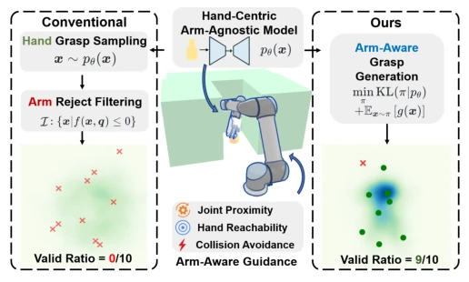
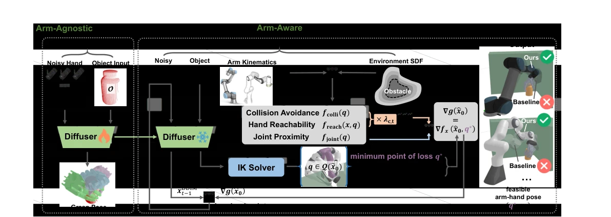
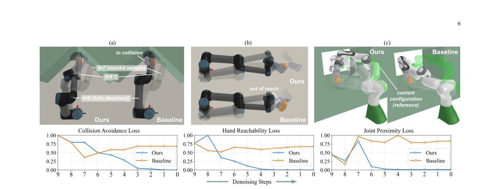
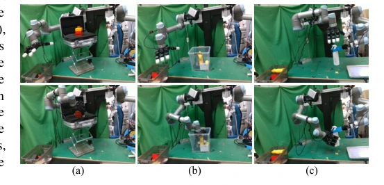
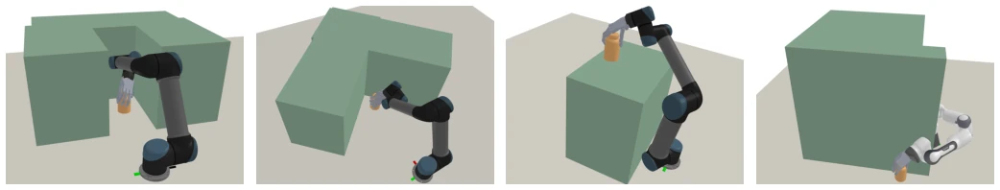
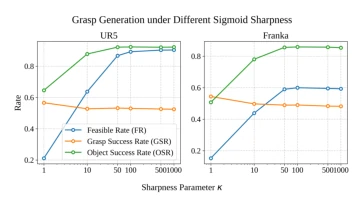
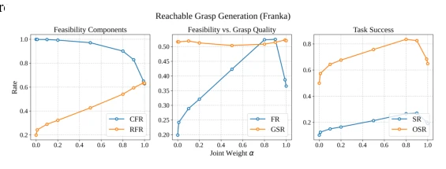
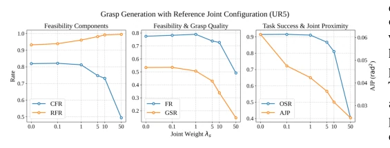
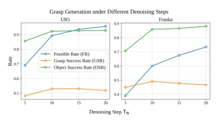
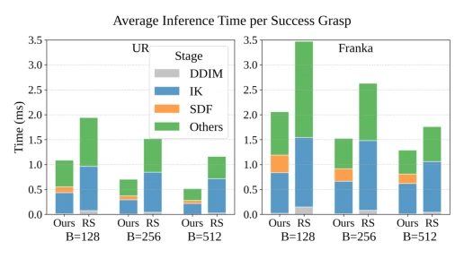

This paper equips the "blind grasping" dexterous hand model with an "arm navigator". Existing hand-centric models (e.g., [2], [4]) only care about how the hand grasps, ignoring whether the arm will collide with walls or cannot reach, resulting in a large number of samples being wasted by Rejection Sampling during real-world deployment. Although some have attempted to train models with arm data [1], this leads to model overfitting to specific manipulators and environments, poor generalization, and requires resynthesizing data and retraining to adapt to new scenarios. The highlight of this paper is "inference-time guidance"; instead of retraining the model, it writes arm constraints (collision, reachability, joint proximity) as closed-form gradients and incorporates them into the diffusion model's denoising process. The downside is that the guidance process may slightly perturb the original distribution, causing a slight decrease in grasp quality (GSR), but this is exchanged for a significant improvement in feasibility (OSR). Overall, this is a pragmatic attempt of "trading math for efficiency"; although it does not solve all physical interaction problems, it is indeed more reliable than blind sampling in constrained environments.
The core pain point of dexterous grasp generation lies in "the hand can grasp, but the arm cannot move". Existing mainstream methods are mostly based on hand-centric assumptions, only learning the pose distribution of free-floating hands [2], [4], [5], ignoring manipulator kinematic constraints. When grasping in narrow spaces or at boundaries, relying solely on Rejection Sampling (RS) is extremely inefficient, because the feasible region occupies a very small proportion in the solution space, and a large number of near-feasible samples are discarded. Another solution is to synthesize a training set with arm data [1], but this leads to model overfitting to specific manipulators and environments, poor generalization, and requires resynthesizing data and retraining to adapt to new scenarios. This paper aims to resolve this contradiction: to utilize the generalization ability of pre-trained hand models while satisfying arm constraints during the inference stage, avoiding expensive retraining or inefficient sampling, and achieving instant adaptation of general models under specific constraints.

Fig. 1: Motivation of arm-aware dexterous grasp generation. Real-world grasp execution requires considering arm-related constraints, yet conventional methods rely on rejection sampling to discard even near-feasible hand poses, leading to low efficiency. Our approach guides pretrained arm-agnostic models with these constraints at inference, greatly improving sampling efficiency.
The overall process is based on a pre-trained hand-centric diffusion model. The pipeline is divided into two stages: training and inference; during training, only the wrist pose distribution is learned; during inference, arm and environment constraints are introduced. The core innovation lies in modeling grasp generation as a joint optimization problem of hand pose and arm configuration. Specifically, the authors derive closed-form gradients for three constraints (collision avoidance, hand reachability, joint proximity). Through the Primal-Dual method, constraint weights are dynamically updated during the diffusion denoising steps. The key mathematical technique lies in using the Damped Pseudo-inverse to map constraint gradients from joint space back to wrist pose gradients in Cartesian space, thereby guiding the denoising direction. This allows near-feasible samples to be "pulled" into the feasible region, rather than being discarded directly. This method requires no extra data, relying only on pre-modeled kinematics and environment SDF.

Fig. 2: Overview of the proposed arm-aware dexterous grasp generation method. Initially, we pretrain an arm-agnostic diffusion model to capture the distribution of wrist poses for floating hands. During sampling, arm kinematics and environment SDF are integrated as constraints, with their gradients guiding the denoising process. This approach significantly enhances the proportion of feasible grasps, adaptable to various arm-hand configurations and constrained environments.

Fig. 3: Illustration of representative cases highlighting the effects of various constraints. The top row illustrates the arm configurations q∗during the denoising process of a certain noised sample both with our method and Baseline (RS), where q∗at t = T, T/2, 0 are visualized from transparent to opaque. The denoising process starts from the same initial sample shown with the highest transparency. The fully denoised hand and arm configuration are depicted with the lowest transparency. For clarity of illustration, we only display the evolution of hand configuration in (b). The green arm in (c) represents the reference joint configuration qcur based on a hypothetical previous grasp attempt. The bottom row presents the evolution of normalized constraint losses over time.
Simulation tests cover 10k objects, 6 scenarios, comparing UR5 and Franka manipulators. Baselines include Rejection Sampling (RS), Projection Denoising (PD) [20], and Post-Sampling Refinement (PSR) [19]. Metrics cover Feasibility Rate (FR), Object Success Rate (OSR), and Grasp Quality (GSR). Results show that the proposed method significantly outperforms RS in OSR (e.g., improvement of about 30% in Scenario S1), although GSR decreases slightly, the overall success rate (SR) is higher. Real-world verification was conducted on UR5+LEAP hand, demonstrating deep container grasping and obstacle avoidance capabilities. Ablation studies indicate that the three constraints work synergistically, and removing any single constraint individually leads to a decline in corresponding metrics. Appendix parameter sensitivity analysis shows the method is robust to hyperparameters, and inference time is controllable.

Fig. 5: Snapshots of real-world constrained grasping demonstrating the practical effectiveness of the proposed method. Top: the initial configurations. Bottom: the final grasping configurations. (a) Grasping behind obstacles. (b) Grasping in deep containers. (c) Bi-manual handover grasping.

Fig. 6: Visualization of four evaluation scenarios (S1-S4) with one successful grasp involving the robotic arm and dexterous hand, the obstacles painted in green, and the grasped object highlighted in orange. Scene S4 is specifically designed to showcase Franka’s collision avoidance using its kinematic redundancy.
其他图片Other Figures

Fig. 8: Effect of different sigmoid shape.

Fig. 9: Effect of different weights coefficient α.

Fig. 10: Effect of different joint weights λs.

Fig. 11: Effect of different denoising step TN.

Fig. 12: The average inference time per successful grasp under different batch size on UR5 and Franka in the Narrow Corridor scenario.